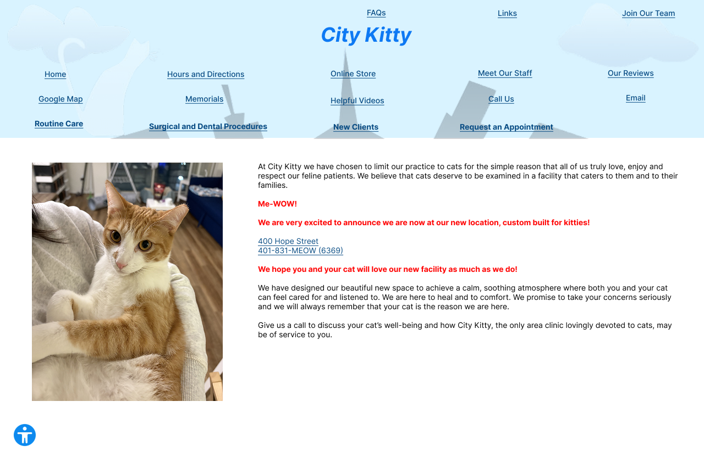

This study aims at redesigning the home page of the website of City Kitty, a local vet in Providence providing healthcare for cats. I chose this website because I plan to take my cat to City Kitty for a vet visit. I chose this interface because I saw some design problems in it, such as the buttons did not present themselves as clickable, making it hard for users to learn the interface.
0. Finding Problems
Efficiency:
- Because users usually read from left to right and then top to bottom, I think laying out the clickable buttons horizontally at the top will be more efficient.
- In addition, the text on the buttons are not written horizontally, but instead with some angles, which makes it harder for the users to read. I suggest making them all horizontal and parallel.
Learnability:
- The design of making all the clickable buttons into street signs is also inefficient because it makes the buttons look like they are only for decorative purpose, which makes it harder to learn.
- Moreover, the title "Veterinary Care For Cats" has the same design as the buttons but the title is not clickable, which also makes the interface hard to learn.
Memorability:
- All the clickable items are laid out with the same design without clear hierarchies, which makes it harder to memorize for the users. For a redesign, I would place some buttons on the top right corner and the others above the title to make it more memorable.
- The important information such as address and phone number is not highlighted red while the less important messages, such as the welcome message, are highlighted red.
Accessibility:
- The WebAIM WAVE indicates color contrast errors in the webpage, along with several alerts, including "Redundant alternative text", "Orphaned form label", "Skipped heading level", "Suspicious link text", "Noscript element" and "Tabindex".
- The skipped heading level aligns with my findings about the mixed and unclear hierarchies in the text.
- I think the suspicious link text alert occured because the link was inserted in a block of text and does not make consistent sense in its context. The link could be wrapped in a more meaningful sentence.
1. Visual Redesign
I created a visual design guide for my redesign of the webpage. It is currently a preliminary version
of the design plan, as shown in the image below.

2. Mockups
Desktop:
Tablet: